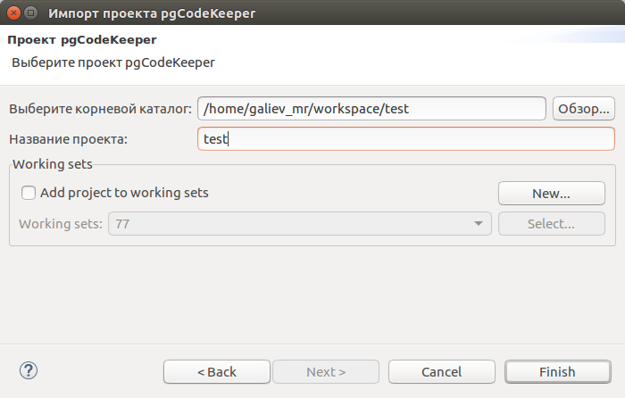

Импорт проекта
Если имеется проект Eclipse (такой проект имеет файл .project в корне), то производится импорт существующего проекта:
- Из меню выберите пункт File > Import... Откроется выбор мастеров импорта.
- Выберите категорию General > Existing Project into Workspace и нажмите Next.
- Выберите директорию проекта.
- Затем выберите проекты для импорта.
- Закончите импорт нажатием на Finish.
В случае, если присутствует только структура проекта pgCodeKeeper, без файлов проекта Eclipse,
то импорт производится с помощью мастера нового проекта.
Хранение структуры проекта pgCodeKeeper без информации Eclipse – обычная практика, например при использовании системы контроля версий.
- Из меню выберите пункт File > Import ... Откроется выбор мастеров импорта.
- Выберите Проект pgCodeKeeper в категории pgCodeKeeper и нажмите Next.

- Укажите путь до директории со структурой проекта pgCodeKeeper и введите имя проекта.
- Нажмите Finish.
- Импорт через мастер нового проекта возможен только при наличии файла ".pgcodekeeper" в корне импортируемой директории.